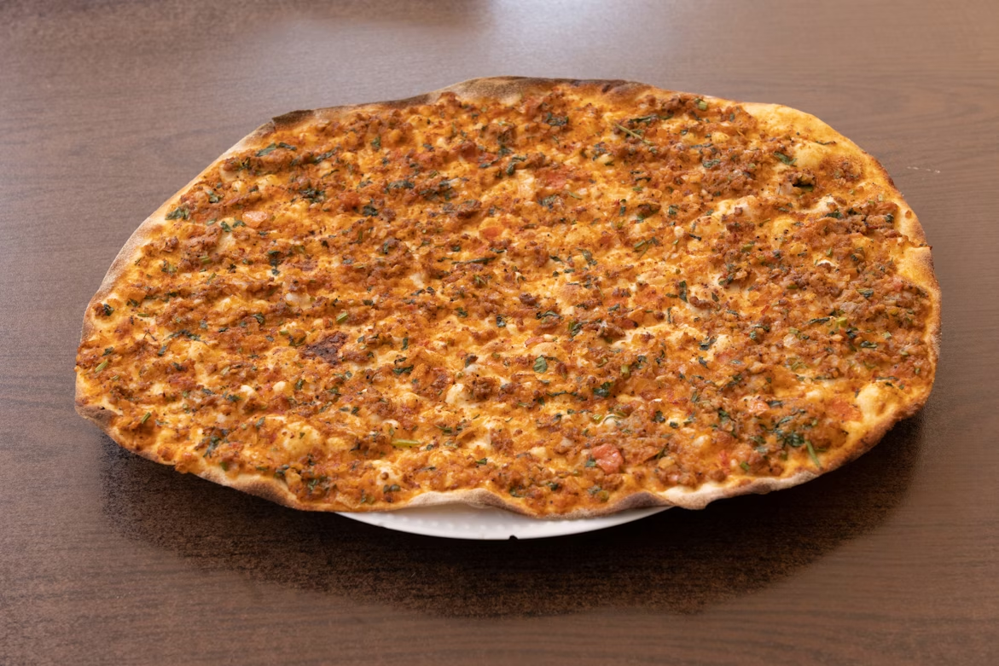

Lahmacun

This Turkish-style pizza is a Turkish flatbread layered with a fresh sauce composed of tomatoes, sweet bell peppers, and minced lamb cooked with a flavorful selection of Mediterranean spices. It is normally garnished with fresh salad and a creamy garlic sauce and or a tangy, zesty, hot red pepper sauce. It is a really light meal, yet filling and flavorful. I find it worth the time to make if I can't get it from my favorite Turkish bakery in my old neighborhood in Amsterdam. For the best flavor, make the topping the night before you make the pizza.
Ingredients
Lamb Sauce:
- 1 Yellow Onion,chopped
- ½ cuo chopped fresh parsley
- ½ cup green bell pepper, diced
- ½ cup red bell pepper, diced
- 3 tablespoons chopped fresh basil
- 2 tablespoons chopped fresh mint
- ½ lemon, juiced
- 4 teaspoons olive oil
- 1 teaspoon chopped garlic
- ½ teaspoon paprika
- ½ teaspoon ground coriander seed
- ½ teaspoon ground cumin
- 4 Roma (plum) tomatoes, halved
- 1 pound lean ground lamb
- 6 tablespoons double concentrated tomato paste
- cayenne pepper to taste
- salt to taste
Dough:
¼ teaspoons active dry yeast
- ½ teaspoon white sugar
- ½ teaspoon white sugar
- 5 cups all-purpose flour
- 2 teaspoons salt
- ½ cup water
- ¼ cup vegetable oil
Garnish:
- ½ cup parsley chopped
- one fresh lemon or lemon juice
Steps
- Make lamb sauce: Combine onion, parsley, bell peppers, basil, mint, lemon juice, olive oil, garlic, paprika, coriander seed, and cumin. Pulse until vegetables are finely chopped. Add tomatoes and process until mixture is a thick puree.
- Heat a large skillet over medium heat. Add lamb, pureed vegetable mixture, and tomato paste; mix well. Cook and stir until lamb is cooked through, 10 to 15 minutes. Stir in cayenne pepper and salt to taste. Transfer mixture to a shallow baking dish to cool to room temperature. Cover with plastic wrap and refrigerate, 8 hours to overnight.
- Make dough: Dissolve yeast and sugar in 1 cup warm water. Combine flour and salt in a large bowl and stir well. Add 1/2 cup water and oil to yeast mixture and pour over flour mixture. Use your hands to mix dough. Turn dough out onto a lightly floured surface and knead until smooth and elastic, about 8 minutes.
- Shape dough into a ball and transfer to an oiled bowl. Cover with a wet towel and let rise in a warm place until doubled in bulk, about 1 hour. Remove lamb sauce from the refrigerator and allow to come up to room temperature.
- Punch dough down, transfer it to a floured work surface, and cut into 10 portions. Shape each portion into a round. Flatten each round with your hand; use a rolling pin to roll each piece into a 10-inch circle. The dough should be thin, like a crepe. Place the rounds on parchment paper.
- Preheat the oven to 500 degrees F (260 degrees C). Line baking sheets with parchment paper.
- Stir lamb sauce and spoon it onto a dough round. Spread it thinly to the edges and press down lightly so it sticks. Place on the prepared baking sheets.
- Bake pizzas on the lowest oven rack in the preheated oven until the edges are a light tan color, 8 to 10 minutes. Place on a wire rack to cool. The pizzas can be stored in an airtight container in the refrigerator for 3 days or in the freezer for 3 months. To reheat, place pizzas in a 350 degrees F oven (175 degrees C) for 8 minutes.
- Assamble lahmacun: Squezze some lemon to the lahmacun then add some parsley, and roll up to eat.
Home